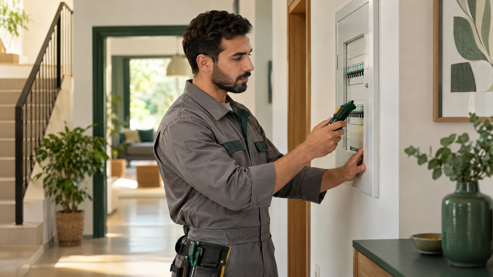

علامات الخطر الكهربائي في المنزل ومتى تطلب فنيًا
الشرر، أو الطقطقة المتكررة، أو رائحة البلاستيك المحترق، أو تغيّر لون المقبس، أو سخونته بصورة غير طبيعية، كلها إشارات تستحق الانتباه. كذلك فإن انطفاء الأنوار عند تشغيل جهاز أو فصل القاطع أكثر من مرة قد يشير إلى حمل زائد أو عطل يحتاج إلى تشخيص؛ لا تعتبر عودة التيار وحدها دليلًا على سلامة الدائرة.
عند ملاحظة العلامة، أبعد الأطفال وبقية الموجودين عن المكان، ولا تلمس المقبس أو السلك أو الجهاز المشتبه به. إذا كان فصل القاطع واضحًا ويمكن الوصول إليه من مكان جاف وآمن، افصله. لا تقترب من لوحة ساخنة أو متضررة أو محاطة بالدخان، ولا تحاول إخماد حريق كهربائي بالماء.

خطوات تقلل المخاطر في الاستخدام اليومي
افحص الكابلات الظاهرة دوريًا، وتوقف عن استخدام أي سلك متشقق أو مكشوف أو ساخن. أبقِ التوصيلات بعيدًا عن الماء والحرارة وممرات المشي، ولا تمررها تحت السجاد حيث قد تتلف دون ملاحظة. استخدم المقابس والملحقات المطابقة لمواصفات الأجهزة، وتجنب توصيل عدة أجهزة عالية الاستهلاك بمشترك واحد.
لا تكدّس المحولات أو المشترك فوق بعضه، ولا تترك شاحنًا أو جهازًا ذا سلك متضرر يعمل دون مراقبة. إذا كان الجهاز يصدر صوتًا أو رائحة أو حرارة غير معتادة، افصله فقط إن أمكن ذلك بأمان، ولا تواصل تشغيله لاختبار ما إذا كانت المشكلة ستختفي.
إذا كان القاطع يفصل باستمرار
قد ينفصل القاطع لحماية الدائرة من حمل زائد أو عطل في جهاز أو مشكلة في التوصيلات. افصل الأجهزة غير الضرورية إن كان ذلك آمنًا، ولا تكرر إعادة القاطع مرات متتابعة، ولا تستبدله بقاطع ذي سعة أعلى. تغيير قيمة الحماية دون حساب مناسب قد يسمح بارتفاع الحرارة بدل علاج السبب.

متى تطلب كهربائيًا مؤهلًا؟
اطلب فنيًا إذا تكرر الفصل، أو بقي المقبس ساخنًا، أو ظهر شرر أو اسوداد، أو احتجت إلى فتح لوحة أو جدار. اشرح للفني متى تظهر العلامة والأجهزة التي كانت تعمل، واترك الدائرة المتأثرة مفصولة إلى أن تُفحص. عند وجود دخان أو لهب أو خطر مباشر، غادر المكان واتصل بخدمات الطوارئ المحلية أولًا.
هذه إرشادات توعوية عامة ولا تغني عن دليل الشركة المصنّعة أو تقييم الفني المختص. السلامة أولاً.
أسئلة شائعة
هل أعيد تشغيل القاطع بعد أن يفصل؟
لا تكرر إعادة تشغيله إذا عاد للفصل أو ظهرت رائحة أو حرارة؛ اترك الدائرة مفصولة واطلب فحصًا متخصصًا.
هل أستطيع لمس مقبس ساخن لفصل الجهاز؟
لا تلمس المقبس أو القابس الساخن. ابتعد، وافصل القاطع فقط من موضع آمن وجاف إن أمكن.
هل يفيد تركيب قاطع أعلى سعة عند تكرار الفصل؟
لا. قد يخفي الخطر ويزيد سخونة الأسلاك؛ يجب أن يحدد كهربائي مؤهل السبب والحماية المناسبة.